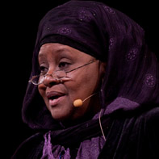
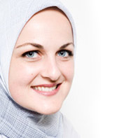

RIS CANADA 2012
About Us- Speakers
- Shaykh Abdallah Bin Bayyah
Mauritania
- Dr. Seyyed Hossein Nasr
USA
- Mufti Mustafa Ceric
Grand Mufti of Bosnia
- Habib Ali Al-Jifri
Yemen
- Dr. Amr Khalid
Egypt
- Dr. Karen Armstrong
UK
- Prof. Tariq Ramadan
Switzerland
- Dr. William Fray Vendley
USA
- Dr. Abdal Hakim Jackson
USA
- Dr. Jamal Badawi
Canada
- Shaykh Abdalla Idris
Canada
- Imam Zaid Shakir
USA
- Dr. Yasir Fazaga
USA
- Sr. Aisha al-Adawiyya
USA
- Shaykh Hamza Yusuf Hanson (via Video)
USA
- Shaykh Muhamed Jibreel
World Famous Qari - Egypt
- Shaykh Mokhtar Maghraoui
Algeria
- Shaykh Sulaiman Mulla
South Africa
- Dr. Tawfique Chowdhury
Australia
- Ustad Moez Masoud
Egypt
- Dr. John Ralston Saul
Canada
 Sr. Kristiane Backer
Sr. Kristiane BackerFormer MTV Host - Germany
- Ustad Nouman Ali Khan
Founder of Bayyinah Institute - USA
- Sr. Yasmin Mogahed
Activist - USA
- Sr. Edina Lekovic
Bosnia